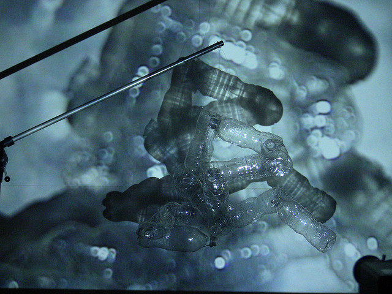
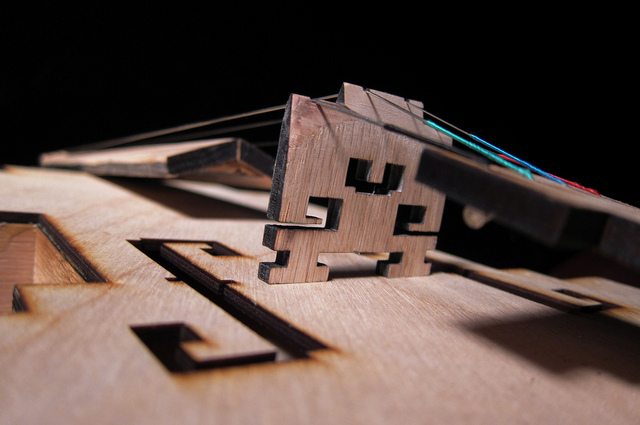

people doing strange things with electricity
This dorkbot-nyc meeting took place at 7pm on Wednesday, March 7th, 2012 at Location One in SoHo.
It featured the physical representation of past ecology of:
Stina Hasse & Jeff Snyder: Move/Bevæg
Stina Hasse is a sound artist and theorist from Copenhagen, Denmark. Jeff Snyder is a composer and instrument designer living in Princeton, NJ. Together, they are working on an interactive sound installation called Move/Bevæg Dig, which allows the listener to explore the space inside a word.
http://cargocollective.com/move Katherine Liberovskaya and Keiko Uenishi: "LandFilles"
LandFilles is an "install-action" with live processes by o.blaat (Keiko Uenishi) and Katherine Liberovskaya. Meant to take place over several days, it consists in the construction of a structure/environment from recycled materials (transparent PET bottles), with the participation of the general public, to form instruments for multi-channel/projection audiovisual performance. Liberovskaya is a video/media artist based in Montreal and New York. Involved in experimental video since the 80s, she has produced numerous videos, video installations and performances shown around the world. Since 2001 her work focuses on collaborations with composers/sound artists mainly in live video+sound performance. Sound art-i-vist, social composer, and a core member of SHARE (http://share.dj), o.blaat (Keiko Uenishi) is known for her works formed through experiments in restructuring and analyzing one's relationship with sounds in sociological, cultural, and/or psychological environments.
http://www.liberovskaya.net
http://oblaat.soundleak.org/works Ranjit Bhatnagar: instrument-a-day
Every year I spend the month of February making a new musical instrument each day. The daily projects range in ambition and complexity from a fully working violin to banging on garbage with a stick. Winds, strings, percussion, electronics, digital, analog, fire, whatever, melodic and drone and noise instruments; hacksaws, pointy sticks, laser cutters and 3d printers. I'll show highlights from five years of instrument-a-day and bring examples for people to try out. Ranjit Bhatnagar is a sound artist creating sculptural installations, musical instruments, and interactive compositions. He lives in Brooklyn, NY.
http://moonmilk.com
NEXT MEETING: 04 April 2012